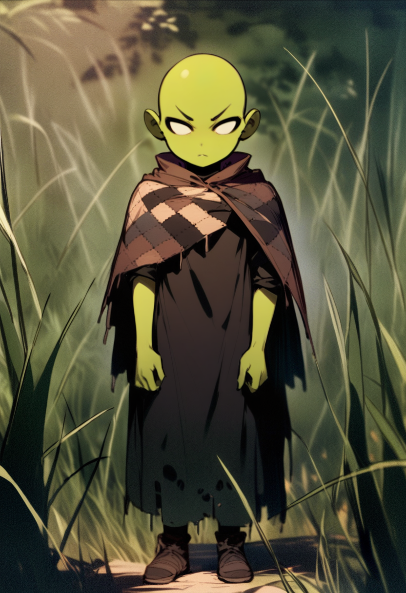
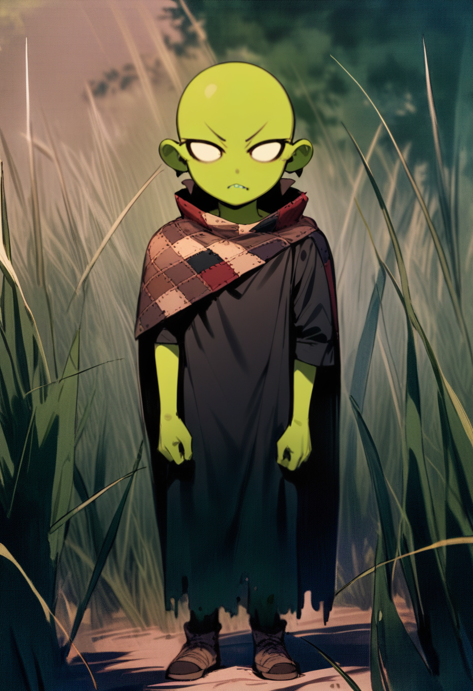
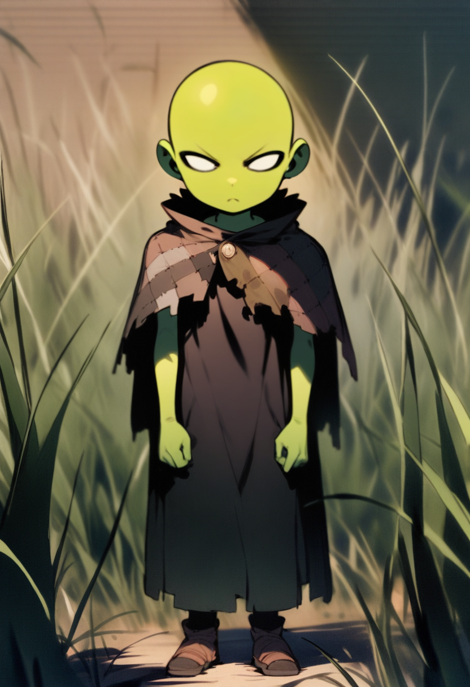
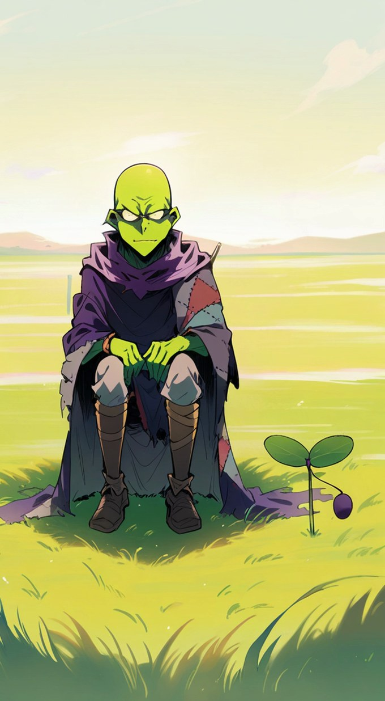
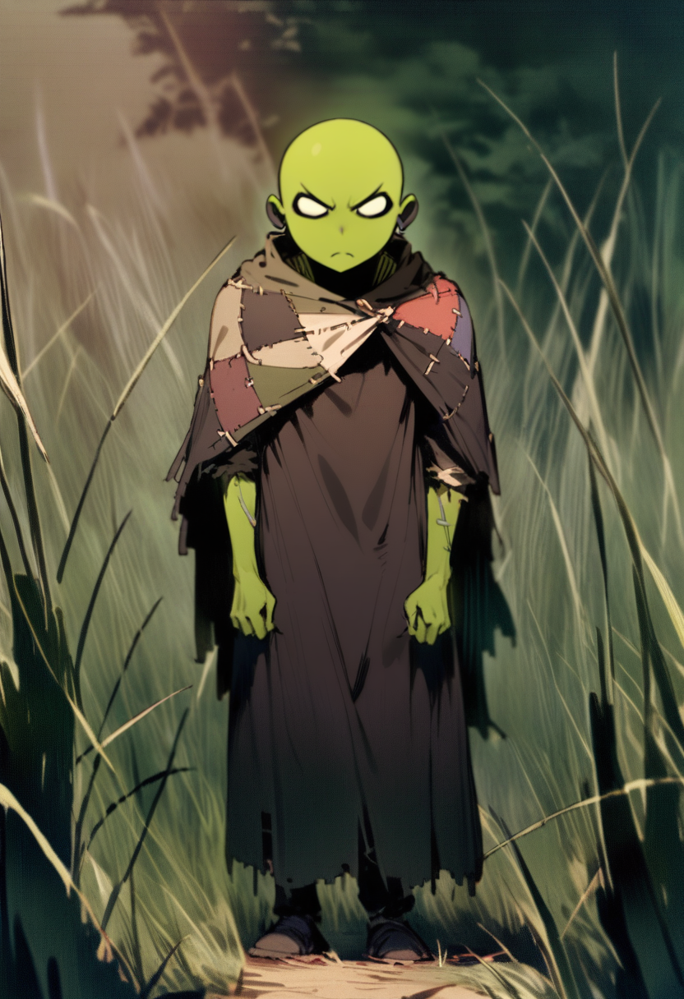
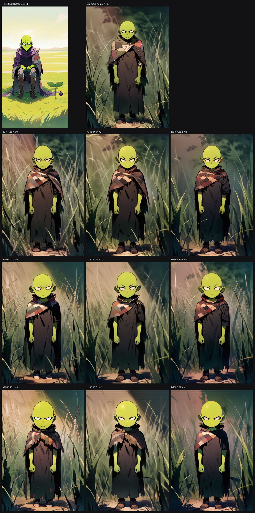

Your ruling this morning superseded tile B on the age axis. This is that ruling
rendered three ways, on the same creature, from the same recipe, with one number changed.
$0 — nine samples on the idle card, about six minutes.
PRIVATE REVIEW PAGE · A TASTE CALL (R4) · EVERY ADULT-DESIGN JOB IS ALREADY HELD
THE QUESTION. Three age reads, all of them younger than the tile,
none of them the killed round-chibi design. Which one is Jerry — A, B or C?
One letter is enough. If none of them is right, "younger than C" or "between A and B"
is just as usable and costs another six minutes.
What you said
Younger, not chibi — a kid/teen goblin, younger read than tile B, but NOT the
killed round-chibi design.
Recorded in canon.yaml as superseding tile B on the age axis and on nothing
else. Every creature attribute below is still the tile's and was not on the table: blank
white eyes with no pupil, no nose bridge, the short low swept-back ears, bald dome, green skin,
patchwork cloak.
The three options
A— the teen

4.65 heads. Reads as an adolescent: the head is bigger than the
tile's but the body is still long. Closest to the tile, so the least disruptive to the shots
already made.B— the kid

4.17 heads. Clearly a child, still slim — no belly, no squat
stance. This is the middle of the ladder and the most literal reading of "a kid/teen
goblin".C— the youngest

3.77 heads. Built as the far end — the rung expected to break
your floor. It did not. Big head, but still a slim upright figure, not the round
mascot.
The two anchors — what you are moving away from

TILE B — 5.26 heads. The reference until this morning. Still
the reference for every attribute except age.

k6a — the same recipe at the adult proportion, and the frame
the seven patch-wave beats were drawn from this morning. This is what A/B/C replace.
What changed between them, and what did not
Held identical
Moved
the face adapter and its reference crop · the mask · the pose skeleton's
stance · the openpose net at 1.0 · the seed · every creature word
head-to-body (the skeleton's head fraction) and the age clause
of the prompt — nothing else
One thing the batch found that is worth thirty seconds
The words barely matter here; the geometry does all of it. Each row was rendered
three times — with the word "adult" simply deleted, with "young goblin, slim", and with
"teenage goblin boy, slim, soft rounded jaw" — and inside a row the three are nearly
indistinguishable. The age you are looking at is carried by proportion, not by adjectives.
That is good news: it means whichever letter you pick is a number we can hit exactly and repeatably,
rather than a phrasing we have to keep re-arguing.
All nine, so you can check that claim rather than take it:

Top row: the two adult anchors. Then 4.65 / 4.17 / 3.77 heads, each at three wordings.
What is waiting on this
Held, not lost: 14 motion jobs, 20 dataset samples, 2 plates and the character
LoRA were pulled off the queue the moment you ruled — all of them would have rendered the
adult. They are renamed, not deleted.
This morning's seven beats already work — 02, 03, 04, 07, 08, 13, 20 all
came back as the creature instead of an adult man, a child or an old man, including beat 07 finally
bald. They are drawn at the adult proportion and get re-rendered at whichever letter you
pick. The recipe is the same; only the number moves.
Nothing in the shipped cut has changed and nothing will until you have seen it.